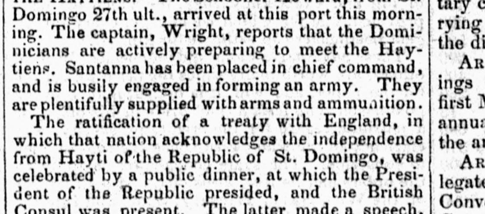
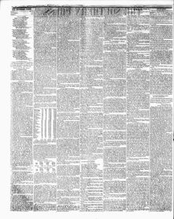

Domingo, was celebrated by a public dinner, at which the PresidentDomingo, fue celebrado con una cena pública, en la que el Presidente
The Southern Press. Washington [D.C.], November 7, 1850. Page 2. View the originalVer el original


See the full pageVer la página completaThe Southern Press reported that the Republic of St. Domingo placed Santanna in chief command to form an army against the Haytiens, noting they are well-supplied with arms, ammunition, and a ten-vessel war fleet. A public dinner was celebrated, presided over by the President and attended by the British Consul, to mark the ratification of a treaty in which England acknowledges the Republic's independence and grants its vessels a fifty-cent reduction in tonnage duty compared to American vessels. According to the British Consul's speech at the dinner, England will not interfere in the upcoming contest between the Republic and Hayti.El Southern Press refirió que la República de Santo Domingo confirió la comandancia general a Santana para levantar un ejército contra los haitianos, apuntando que disponían de bastimentos suficientes, parque y una flota de diez buques de guerra. Tuvo lugar un banquete oficial encabezado por el presidente y con la asistencia del cónsul británico con motivo de ratificarse el tratado mediante el cual Inglaterra reconoció la soberanía de la república y otorgó a sus buques una rebaja de cincuenta centavos por tonelada frente a los estadounidenses. Conforme a las palabras del representante consular en el acto, Inglaterra se mantendría al margen del cercano choque entre dominicanos y haitianos.
FULL TEXT:TEXTO COMPLETO:
THE HAYTIENS.—The schooner Howard, from St. Domingo 27th ult., arrived at this port this morning. The captain, Wright, reports that the Dominicians are actively preparing to meet the Haytiens. Santanna has been placed in chief command, and is busily engaged in forming an army. They are plentifully supplied with arms and ammunition.LOS HAITIANOS. —La goleta Howard, procedente de Santo Domingo el 27 del pasado, llegó a este puerto esta mañana. El capitán, Wright, informa que los dominicanos se están preparando activamente para enfrentar a los haitianos. Santana ha sido colocado en el mando en jefe, y está ocupadamente empeñado en formar un ejército. Están abundantemente provistos de armas y municiones.
The ratification of a treaty with England, in which that nation acknowledges the independence from Hayti of the Republic of St. Domingo, was celebrated by a public dinner, at which the President of the Republic presided, and the British Consul was present. The latter made a speech, in which he said, among other things, that the English would not interfere in the coming contest between them and Hayti. Neither the American Consul nor any of the American ship-masters were present at the dinner. By the new treaty with England, the vessels of that nation are allowed to enter the ports of the Republic at fifty cents less tonnage duty than American vessels. The Dominicians have a fleet of ten vessels of war, viz: one ship, two barques, two brigs, and five schoonersLa ratificación de un tratado con Inglaterra, en el cual esa nación reconoce la independencia de Haití de la República de Santo Domingo, fue celebrada con una cena pública, en la cual presidió el Presidente de la República, y el Cónsul Británico estuvo presente. Este último hizo un discurso,